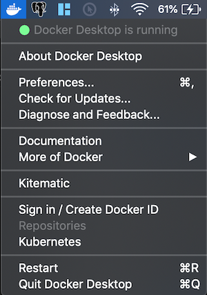
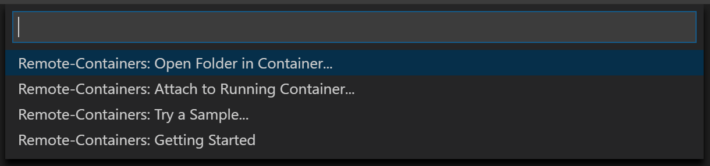
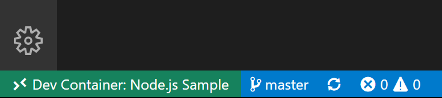
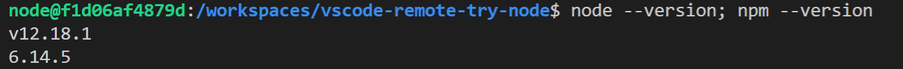
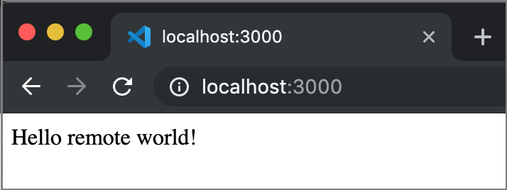

Remote development in Containers
This tutorial walks you through running Visual Studio Code in a Docker container using the Remote - Containers extension. You need no prior knowledge of Docker to complete this tutorial.
Running VS Code inside a Docker container can be useful for many reasons, but in this walkthrough we'll focus on using a Docker container to set up a development environment that is isolated from your local environment.
Prerequisites
You need Visual Studio Code installed.
Install Docker
Docker is needed to create and manage your containers.
Docker Desktop
Download and install Docker Desktop.
Start Docker
Run the Docker Desktop application to start Docker. You will know it's running if you look in the activity tray and see the Docker whale icon.
Docker might take a few minutes to start. If the whale icon is animated, it is probably still in the process of starting. You can click on the icon to see the status.

Check Docker
Once Docker is running, you can confirm that everything is working by opening a new terminal window and typing the command:
docker --version
# Docker version 18.09.2, build 6247962
Install the extension
The Remote - Containers extension lets you run Visual Studio Code inside a Docker container.

Check installation
With the Remote - Containers extension installed, you will see a new Status bar item at the far left.

The Remote Status bar item can quickly show you in which context VS Code is running (local or remote) and clicking on the item will bring up the Remote - Containers commands.

Get the sample
To create a Docker container, we are going to open a GitHub repository with a Node.js project.
Select Remote-Containers: Try a Sample... from the command list that appears and select the Node sample from the list.

Note: There are other remote container samples such as vscode-remote-try-python or vscode-remote-try-java, but this tutorial will use vscode-remote-try-node.
Wait for the container to build
The window will then reload, but since the container does not exist yet, VS Code will create one and clone the sample repository into an isolated container volume. This may take some time, and a progress notification will provide status updates. Fortunately, this step isn't necessary the next time you open the folder since the container will already exist.

After the container is built, VS Code automatically connects to it and maps the project folder from your local file system into the container.
Check the container
Once the container is running and you're connected, you should see your remote context change in the bottom left of the Status bar:

Check your environment
One of the useful things about developing in a container is that you can use specific versions of dependencies that your application needs without impacting your local development environment.
The specific container for this tutorial has Node.js v12 installed, which you can check by opening a new terminal Terminal > New Terminal (kb(workbench.action.terminal.new)) and entering:
node --version; npm --version
This should show the following versions:

Run the application
We can now hit kb(workbench.action.debug.start), which will run the application inside the container. Once the process starts, navigate to http://localhost:3000 and you should see the simple Node.js server running!

Ending your container connection
You can end your session in the container and go back to running VS Code locally with File > Close Remote Connection.
How it works
This next section describes in more detail how the Remote - Containers extension sets up and configures your containers.
The remote container extension uses the files in the .devcontainer folder, namely devcontainer.json, and an optional Dockerfile or docker-compose.yml, to create your dev containers.
First your image is built from the supplied Docker file or image name. Then a container is created and started using some of the settings in the devcontainer.json. Finally your Visual Studio Code environment is installed and configured again according to settings in the devcontainer.json.
Once all of this is done, your local copy of Visual Studio Code connects to the Visual Studio Code Server running inside of your new dev container.
devcontainer.json
The devcontainer.json is basically a config file that determines how your dev container gets built and started.
//devcontainer.json
{
"name": "Node.js Sample",
"dockerFile": "Dockerfile",
"settings": {
"terminal.integrated.shell.linux": "/bin/bash"
},
"extensions": [
"dbaeumer.vscode-eslint"
],
"forwardPorts": [3000],
"postCreateCommand": "yarn install",
"remoteUser": "node"
}
The above example is taken from the vscode-remote-try-node repo we used in the tutorial.
| Option | Description |
|---|---|
dockerfile |
Relative path to a Dockerfile that you want to use as your image. |
settings |
Adds default settings.json values into a container/machine specific settings file. |
extensions |
An array of extension IDs that specify the extensions that should be installed inside the container when it is created. |
forwardPorts |
Make a list of ports inside the container available locally. |
postCreateCommand |
A command string or list of command arguments to run after the container is created. |
remoteUser |
Overrides the user that VS Code runs as in the container (along with sub-processes). Defaults to the containerUser. |
Full list of devcontainer.json options.
Congratulations!
Congratulations, you've successfully completed this tutorial!
This has been a brief overview of what is possible using dev containers. As a next step, we recommend checking out how you can open an existing folder from your machine in a container or opening a GitHub repository or PR in a container.
Check out the other Remote Development extensions.
Or get them all by installing the Remote Development Extension Pack.
Troubleshooting
Verify Docker context
If you are not using a fresh Docker install and the Remote-Containers: Try a Sample... sample encounters issues with the current context, you should check your Docker context. Fresh installs will have a 'default' context and you can set it back as the current context.
# Displays the list of contexts, '*' denotes the current context
docker context list
# Switches the list to the 'default' context
docker context use default